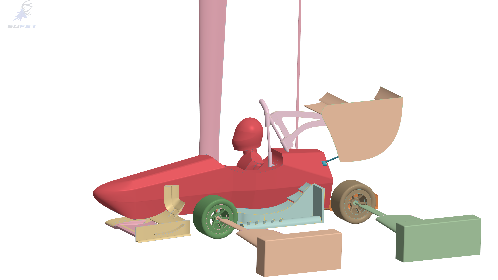
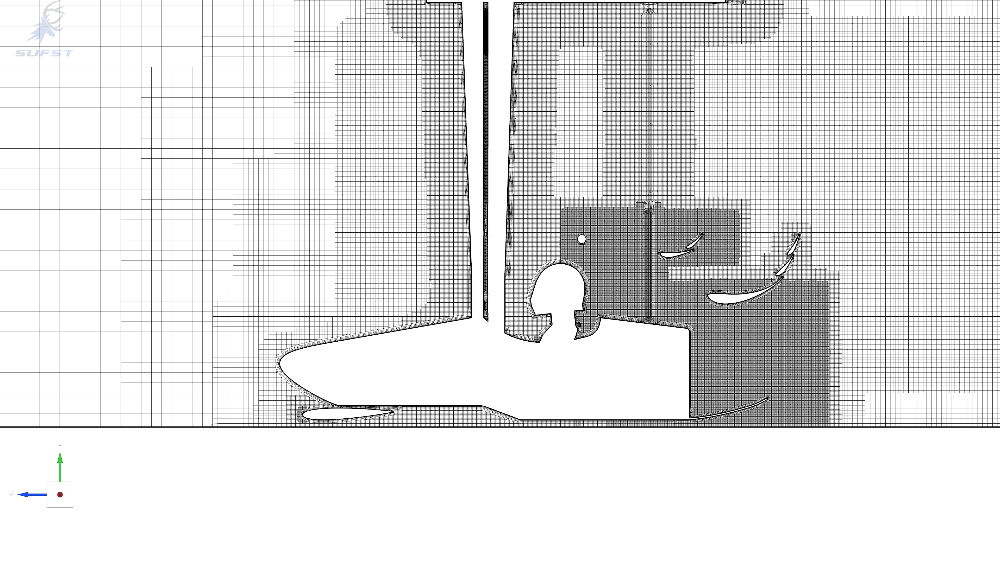

Wind-Tunnel Setup
We instrumented the aerodynamic package with 24 pressure tappings to capture precise static pressure readings.
Attaching the vehicle spine directly to the moment and force balance enabled control and measurement of rake angles.

Alongside balance and pressure readings, we used tufts to observe rear-wing vortex shedding.
Fluorescent flow-vis paint was also applied to map surface flow patterns, mimicking line integral convolution (LIC) oil flow diagrams.
To replicate on-track aerodynamics, the setup utilised a rolling road and boundary layer suction, with individual load cells isolating the drag contribution of each rotating wheel.

CFD Setup
CFD boundary conditions and turbulence parameters were configured to directly match the physical environment of the R.J. Mitchell wind tunnel.

The computational geometry was scaled to match the 50% physical model before applying an iterative meshing strategy. This resolved local flow sensitivities and systematically reduced discrepancies with the wind tunnel data.